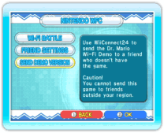
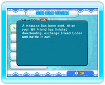
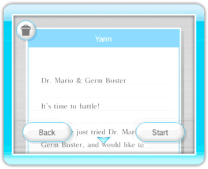

20 |
Sending the Demo Version (Dr. Mario) |
 |
You can send a demo version of the game to friends who have not purchased Dr. Mario & Germ Buster. Before sending, make sure WiiConnect24 is set up properly (see “Using WiiConnect24”). Note: The demo version can only be used to play online friend battles against players who have the full version of the game. If both players have demo versions, the game will not be playable. You will need your own Friend Code to send the demo version. You can check your Friend Code by selecting NINTENDO WFC from the Mode Selection Screen, then FRIEND SETTINGS, and finally CONFIRM FRIEND CODE. ● Sending the Demo 
On the Mode Selection Screen, select NINTENDO WFC to display the Nintendo WFC Menu Screen, then select SEND DEMO VERSION. 
When your Wii Address Book is displayed, select the Wii Friend to whom you wish to send the demo, then select YES to confirm. 
After the demo has been sent, a confirmation will be displayed. Note: You cannot send this game to friends outside your region, or to Wii Friends who do not have a Wii Number. 
● Receiving the Demo Once the demo version has been sent, your friend will receive a message through the Wii Message Board. After reading the message, your friend can choose to begin the download process. After the download is complete, your friend must get a Friend Code from within the game, and you must then register each other’s Friend Codes (see ”Friend Settings”). To play a game against your friend, go to the Mode Selection Menu, select NINTENDO WFC from the Dr. Mario Menu Screen to display the Nintendo WFC Menu Screen. From here, select Wi-Fi BATTLE and then INVITE A FRIEND, and select the Friend you wish to play against. Note: Only the person who has the full version of Dr. Mario & Germ Buster can invite the other person. Settings and results will not be saved. |
 |
 |